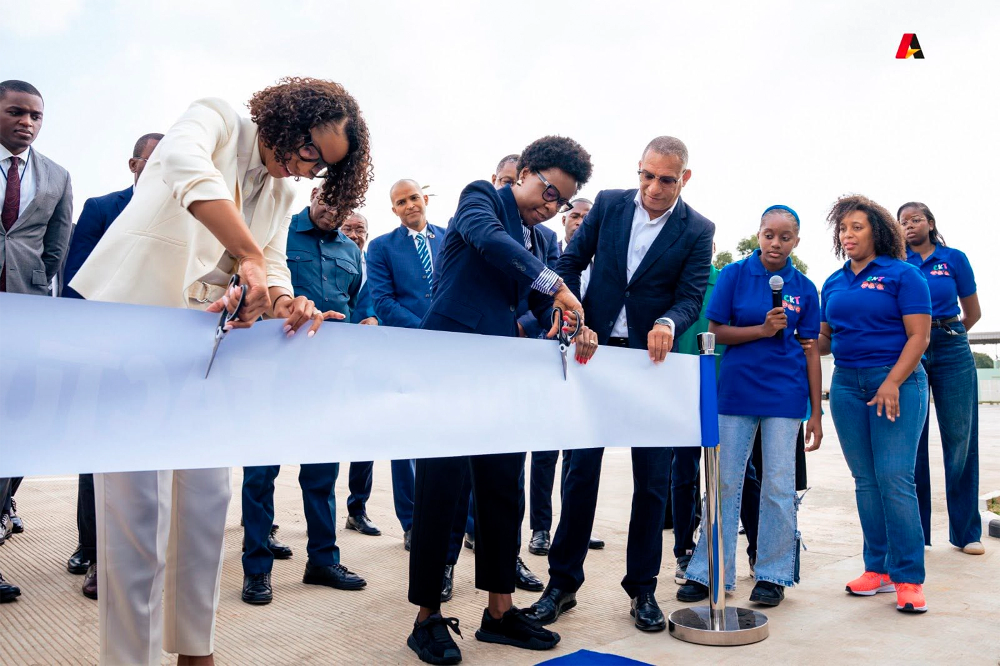
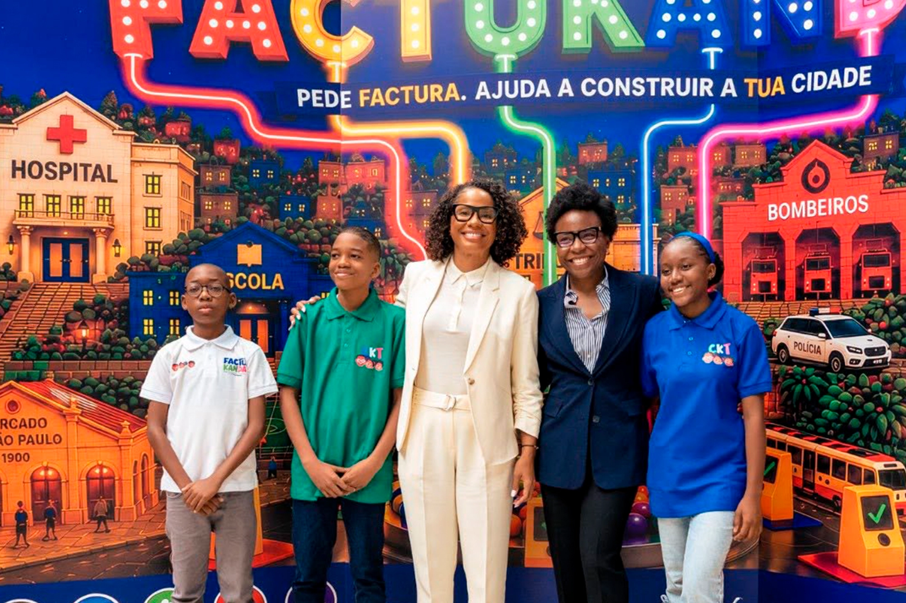
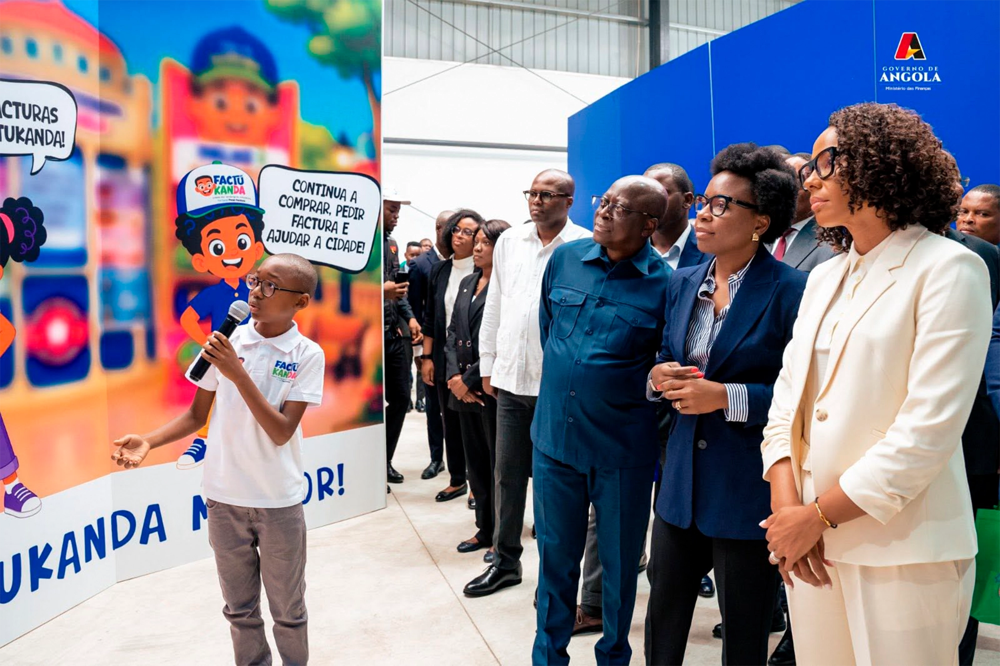
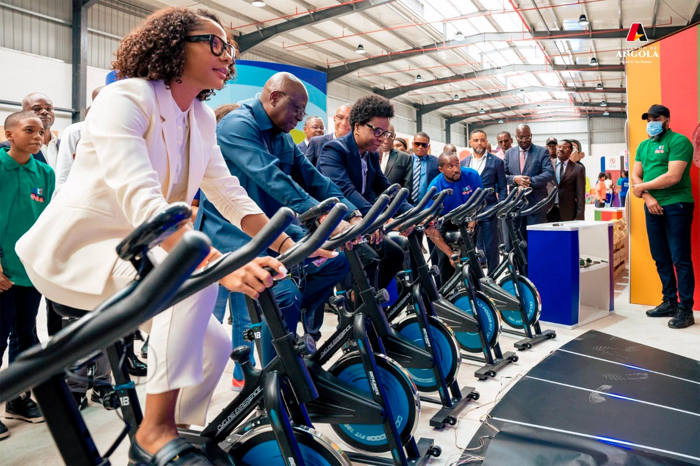
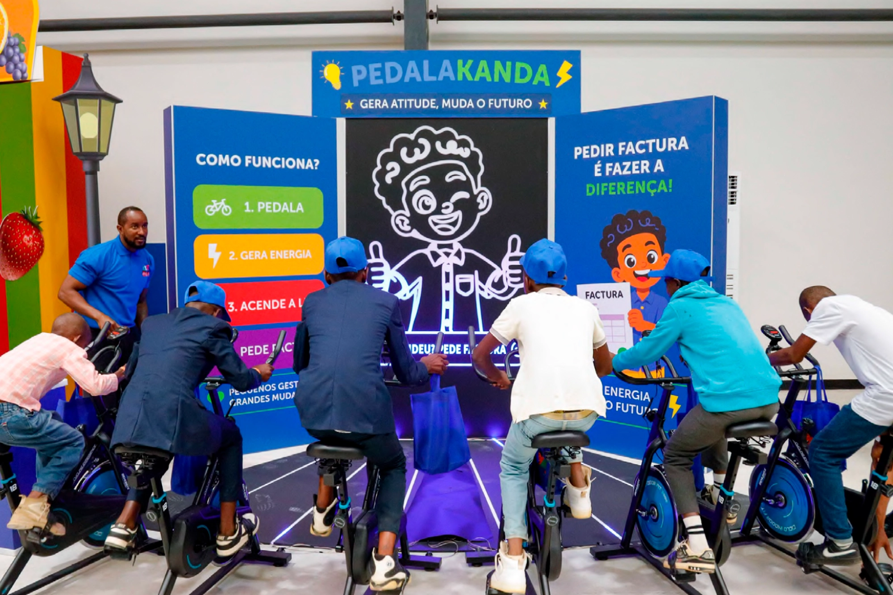
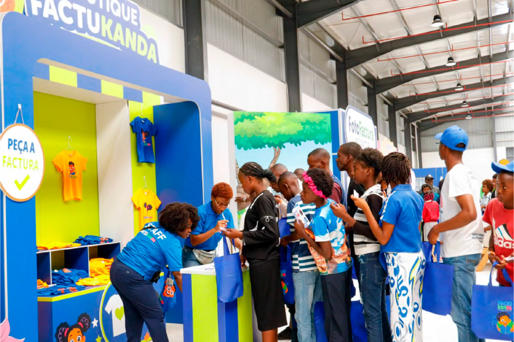

🎓 A educação fiscal começa na infância
A educação fiscal começa cada vez mais cedo em Angola. Entre 16 e 21 de Junho, 5 992 crianças participaram na segunda edição da Cidade dos Kandengues Tributários, denominada FACTUKANDA, uma iniciativa da Administração Geral Tributária (AGT), desenvolvida no âmbito do Programa Nacional de Educação e Cidadania Fiscal (PNECF). O projecto procura aproximar as novas gerações dos princípios da cidadania fiscal e demonstrar, de forma prática, como os impostos contribuem para o financiamento dos serviços públicos e para o desenvolvimento do País.
A FACTUKANDA foi inaugurada pela ministra das Finanças, Vera Daves de Sousa, e pela ministra da Educação, Erika de Carvalho. A presença das duas governantes evidenciou a importância da articulação entre a política fiscal e a política educativa e reforçou o reconhecimento da educação fiscal como uma responsabilidade partilhada entre a administração tributária e o sistema de ensino, com um papel determinante na formação cívica das novas gerações.
Instalada no Centro Logístico Aduaneiro, no município do Cabiri, província de Icolo e Bengo, a cidade pedagógica recebeu crianças provenientes de 72 escolas e dois lares, bem como visitantes particulares acompanhados pelas suas famílias. Ao longo de seis dias, o recinto acolheu essencialmente participantes de Icolo e Bengo e de Luanda, confirmando a crescente adesão a um modelo pedagógico que transforma uma matéria tradicionalmente técnica numa experiência acessível, prática e participativa.
💡 Educação fiscal como investimento de longo prazo
A Cidade dos Kandengues Tributários parte de uma ideia simples: a relação entre o Estado e os contribuintes não começa apenas quando surge a primeira obrigação tributária. Começa muito antes, na formação de cidadãos capazes de compreender por que razão existem impostos, como são aplicadas as receitas públicas e qual é o seu papel no financiamento colectivo.
Na cerimónia de abertura, o administrador da AGT Pedro Marques enquadrou a educação fiscal como um investimento estratégico. Segundo o responsável, transmitir estes conhecimentos na infância contribui para formar cidadãos mais conscientes dos seus direitos e deveres e favorece, a prazo, uma cultura de cumprimento voluntário das obrigações tributárias.
A abordagem desloca o debate fiscal do momento da cobrança para o terreno da confiança, da responsabilidade e da participação cívica. Ao compreenderem que escolas, hospitais, estradas, segurança e outros serviços dependem de recursos públicos, as crianças começam a associar o imposto não apenas a uma obrigação, mas também ao funcionamento da sociedade.
🏙️ Uma cidade para aprender a ser cidadão
Concebida à escala infantil, a FACTUKANDA reproduziu espaços do quotidiano e colocou os participantes no papel de consumidores, comerciantes e cidadãos. Ao longo do percurso, as crianças aprenderam a solicitar factura, reconhecer a função dos impostos, simular operações comerciais e perceber de que modo pequenas decisões individuais produzem efeitos colectivos.
A chefe do Departamento de Relações Públicas do Gabinete de Comunicação e Assistência ao Contribuinte, Denise Garrocho Panzo, explicou que a iniciativa foi estruturada para crianças e adolescentes dos 6 aos 16 anos, com uma metodologia assente na experiência. Em vez de apresentar conceitos abstractos, a cidade permite que os participantes observem, experimentem e tomem decisões num contexto próximo da realidade.
"Este espaço proporciona às crianças a oportunidade de aprender, na prática, como solicitar uma factura e compreender de que forma as receitas arrecadadas pela AGT permitem financiar políticas públicas, realizar investimentos e melhorar as condições de vida da população."
Agostinho Pedro António — Vice-Governador de Icolo e Bengo🧾 Pedir factura é um acto de cidadania
A campanha "Por Favor, Peça Factura" ocupou um lugar central nesta edição. A mensagem procurou demonstrar que o pedido de factura não é um gesto meramente administrativo: reforça a transparência das transacções, protege o consumidor, apoia a formalização da economia e contribui para que as receitas devidas cheguem ao Estado.
Ao escolher esta mensagem como fio condutor, a AGT procurou aproximar a educação fiscal de um comportamento concreto, que pode ser repetido fora do recinto. A aprendizagem não termina, por isso, no momento da visita: acompanha a criança nas compras familiares e cria oportunidades para questionar hábitos, recordar a importância da factura e influenciar positivamente os adultos.
A presença dos vencedores da segunda edição das Olimpíadas Tributárias, realizada em 2025, reforçou a ligação entre diferentes iniciativas de educação fiscal. Nelsia Fernando, N'sualo dos Santos e Jonivaldo dos Santos sublinharam a importância de ensinar estes temas desde cedo.
📌 Em resumo
- 5 992 crianças participaram na edição realizada de 16 a 21 de Junho.
- A iniciativa recebeu participantes de 72 escolas, dois lares e famílias das províncias de Icolo e Bengo e Luanda.
- A campanha "Por Favor, Peça Factura" foi o principal eixo de sensibilização.
- A AGT pretende expandir progressivamente a FACTUKANDA a outras províncias.
- O próximo Encontro Inter-Regional terá lugar na 7.ª Região Tributária, Lunda-Sul, em 2027.
📷 Galeria da FACTUKANDA





Arraste para ver mais imagens